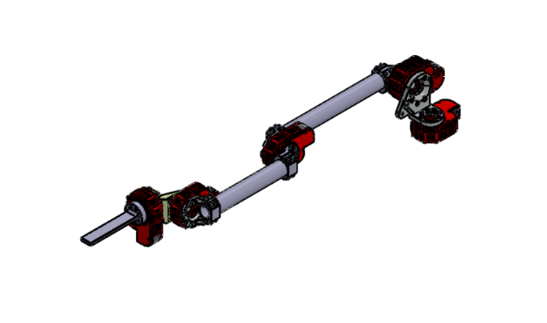
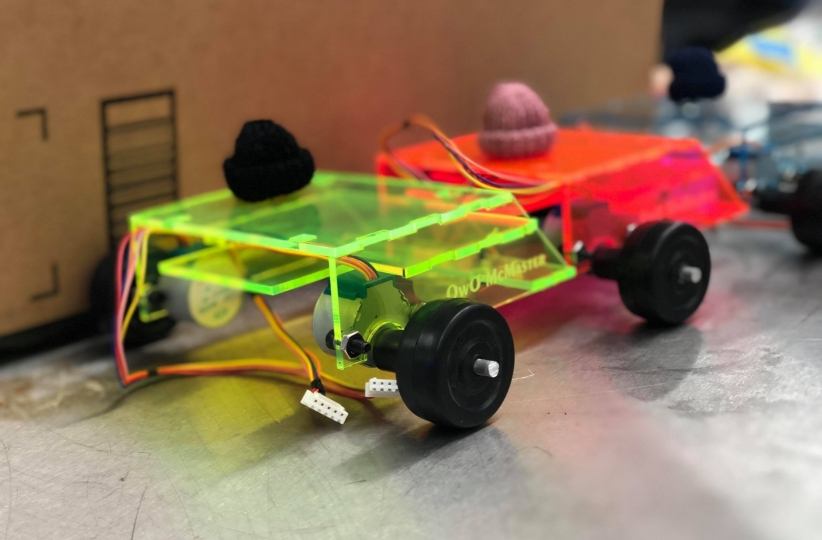
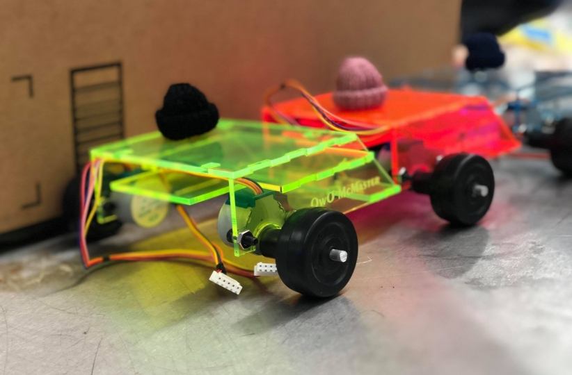

LQR Trees November 2021-December 2021
For my final project in Underactuated Robotics at Carnegie Mellon, I implemented the LQR trees algorithm from "LQR-Trees: Feedback Motion Planning via Sums-of-Squares Verification," by Tedrake, et. al. The algorithm uses sum of squares optimization to generate a tree of feedback controllers to drive a dynamic system to a goal state. I tested it on systems such as a pendulum and a cartpole, and attemped to extend it to a floating manipulator.
Code (Python): https://github.com/EpicDuckPotato/jubilant-octo-dollop
Report: https://drive.google.com/file/d/1Ya5KmEbFwXSC1YC2WCe8GQloi9Se7R-2/view?usp=sharing
Shipbot February 2021-May 2021
For my Mechatronic Design class, I worked on a team of four to build a robot that could autonomously actuate devices on a ship. One of my key accomplishments was implementing a particle filter to estimate the robot's pose from an unknown initial pose, using four time-of-flight sensors and an IMU. This earned us the "Best coolness factor" award. Otherwise, I was responsible for controlling the robot arm and integrating our subsystems together within a ROS software stack. Here's our public presentation video:
Website: https://sites.google.com/andrew.cmu.edu/cmu-sea-cucumbers/home
Code (Python, C++, ROS): https://github.com/Sea-Cucumbers/shipbot_ros
Coverage with a Quadrotor April 2021-May 2021
I worked on a team to write a motion planner for a drone to map an unknown environment. We implemented the rapidly-exploring random tree (RRT) planner from "Receding Horizon Next-Best-View Planner for 3D Exploration," by Bircher et. al. We also explored combining this planner with an A* planner to reduce the distance travelled to unmapped cells. You can find a video of our planner in action, as well as our report, below.
Code (C++, ROS): https://github.com/EpicDuckPotato/nbv_mapping
Report: https://drive.google.com/file/d/1MyWw06rmLpYdQRMqKb1Skkvk7v8lF3Zz/view?usp=sharing
Project Ignite: Interstellar Exploration February 2021-April 2021
As a project advisor for Project Ignite, I collaborated with another project advisor to mentor a group of six high school students as they designed an interstellar probe and researched path planning algorithms for it. I taught them about concepts such as graph search and the travelling salesman problem. You can see their final planning algorithm in action below:
Deep Learning for Music Generation November 2020-December 2020
I worked on a team to compare neural network architectures in their ability to generate music. We trained recurrent networks--LSTMs and GRUs--as well as a Transformer network, on piano music from the MusicNet and MAESTRO datasets. We also designed a novel architecture for generating scores for multiple instruments, consisting of two separate networks: a composer network, which generates the notes, and an assigner, which assigns notes to instruments. We trained the composer to generate relatively melodic music, but failed to train the assigner. You can find some of our networks' music below.
Code (Python): https://github.com/EpicDuckPotato/music_generation701
Report: https://drive.google.com/file/d/1wZAJhwMZ3dRPhr5zNYguLUoYh86goOcL/view?usp=sharing
Scribble June 2020-August 2020
I trained a neural network to generate handwriting for a given input string, using the network architecture from Alex Graves' famous paper "Generating Sequences With Recurrent Neural Networks." I implemented the network in PyTorch.
I think the coolest part of this project is that the network uses Gaussian mixture models to mimic human-like randomness. For example, the samples below were generated from the same inputs as above, with vastly different results.
Code (Python): https://colab.research.google.com/drive/1O1newbojussOslQkaOxmYnI6PtW_WwQ9?usp=sharing
Robotic Medical Assistant April 2020-May 2020
For my final project in "Introduction to Robotics," I designed and controlled a nasal swabbing robot within a Gazebo simulation environment.
Code (C++): https://github.com/EpicDuckPotato/RobotSwabber
Rube Goldberg Machine January 2020
For the first lab in "Introduction to Robotics," I worked on a team of three to build a Rube Goldberg machine in a week, designed to fit various mechanical constraints. The first video below is the initial test for our launch mechanism, which was one of my favorite parts of the project. The second is a video showing the whole machine in action.
Robot Kinematics and Dynamics Capstone November 2019-December 2019
For my final project in "Robot Kinematics and Dynamics," I programmed a 5 degree-of-freedom robotic arm to traverse a series of narrow mazes without touching the sides. I implemented trajectory planning using inverse kinematics and spline interpolation, as well as gravity compensation, all in MATLAB.
Hack the Universe February 2019
One of the fundamental problems in quantum mechanics is finding the "ground state" wave function of a quantum system. For many-body systems, simply storing this wave function requires an impractically large amount of memory, and computing it becomes infeasible using traditional methods. During Hack the Universe, I worked on a team to compute the ground state wave function using a neural network, specifically a restricted Boltzmann machine. We implemented the algorithm from "Solving the Quantum Many-Body Problem with Artificial Neural Networks," by Giuseppe Carleo. Code (Python): https://github.com/evannw/htuquantumml

Trobots January 2019
For Build18, I worked on a team to build a robotic cat that tracks a flashlight. We ran OpenCV on a Raspberry Pi, which communicated with an Arduino to control the robot's motors.
 
